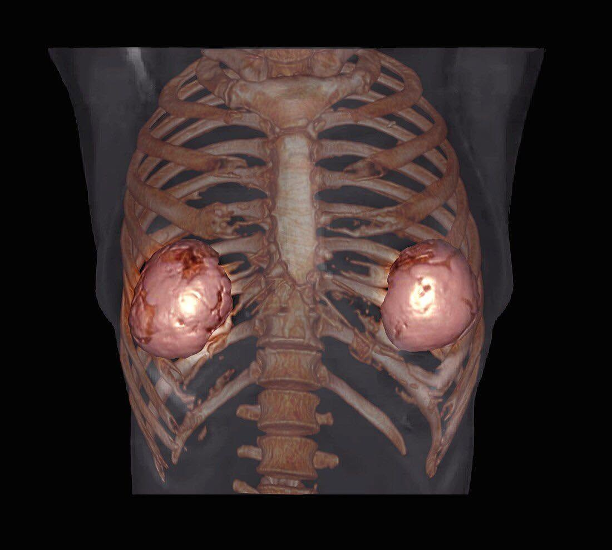

Arterial and breast-implant calcification share an inflammatory damage response
Louis uses breast-implant calcification as an analogy for arterial calcification. In both, an inflammatory damage response to foreign, dying or aging tissue ends with calcium deposition that walls off the area.